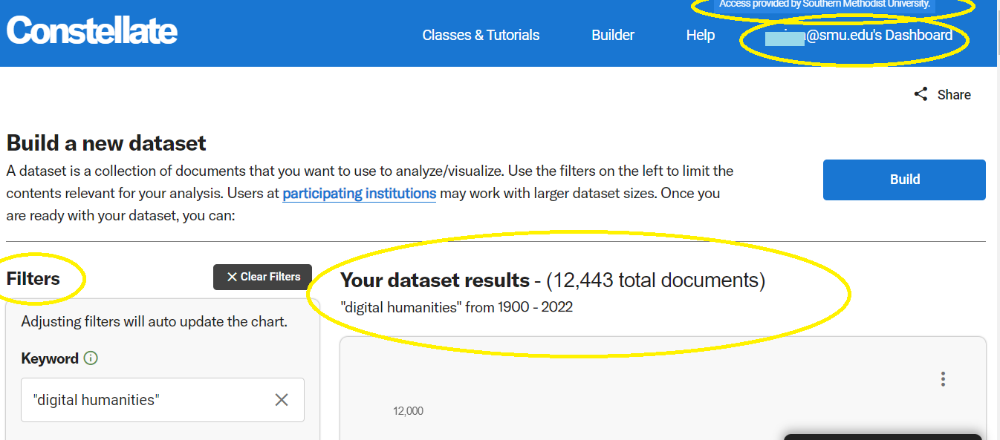
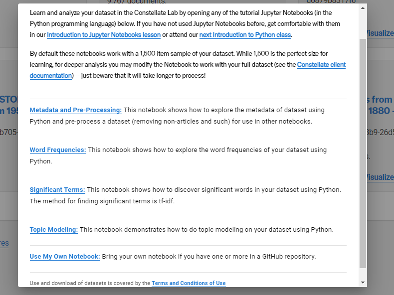

JSTOR Constellate#
Constellate is text analytics platform from ITHAKA.
teach and learn text analytics
build datasets from across multiple content sources
Two of ITHAKA’s services, JSTOR and Portico, are the initial sources of content for the new platform, which includes: Chronicling America, collections from Documenting the American South, the South Asia Open Archives and Independent Voices from Reveal Digital.
Dataset Dashboard and Example datasets
Saving to Dashboard and examples available when logged in.
visualize and analyze their datasets.
Login to JSTOR & CONSTELLATE#
1st: Login into JSTOR & Constellate. Directions are on this guide.
Enter your keywords in Build your dataset and search. It will then run your search. You can use filters to refine and modify your search.

Once your results look interesting to you, click on Build your dataset. It will ask if you want to name your dataset.
You will then be at your Dataset Dashboard which displays recently viewed datasets and example datasets.
Scroll down to see the example datasets.
The options available to you are:
Analyze: This will allow you to analyze your dataset in the Constellate Lab by opening any of the tutorial Jupyter Notebooks (in the Python programming language) as seen below.

Visualize: This will allow you to do things like visualize terms across your dataset.
Download: note the options available in regards to content (metadata, ngrams, full-text, sampled metadata, trigrams) and formats (.csv, json)
There is a limit on how large a dataset you can download.
More on Working with Dataset Files